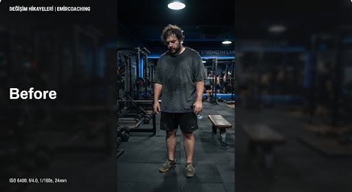
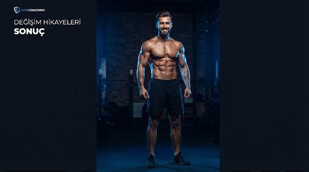

Mert, 28
"Sadece fiziksel değil, mental olarak da büyük bir değişim yaşadım. Disiplin kelimesinin anlamını öğrendim."
- Ağırlık
- -12 KG
- Yağ Oranı
- -%8
- Kas Kütlesi
- +2 KG
Programa başladığımda 98 kiloydum ve merdiven çıkarken bile nefes nefese kalıyordum. Yıllarca farklı diyetler denemiş, her seferinde birkaç hafta sonra bırakmıştım.
İlk haftalarda en zorlandığım şey düzen oldu: öğünleri tartmak, antrenmanları kaçırmamak, uykuyu ciddiye almak. Haftalık kontrollerde planım küçük adımlarla güncellendi; hiçbir zaman aç kalmadım.
12 haftanın sonunda 12 kilo verdim, yağ oranım %8 düştü ve kas kütlemi korudum. Ama asıl kazancım disiplin oldu: artık antrenmana motivasyon beklemeden gidiyorum.